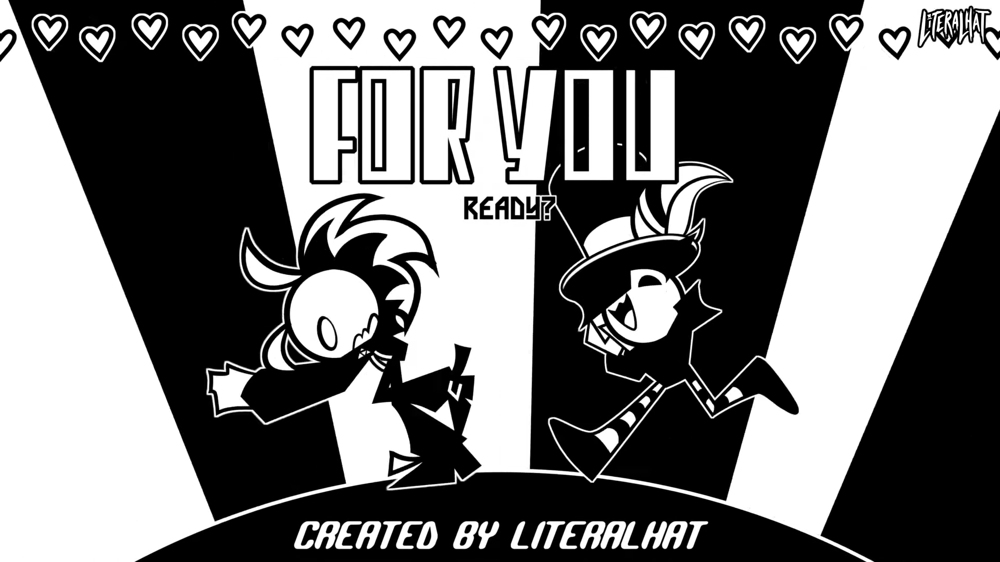

For You
| Published On | December 1, 2022 |
|---|
An energetic animation depicting ’s admiration for , romanticizing him in the process. Throughout the video, his determined admiration for Chicken Man seems only one-sided. It is animated to the song “For You” by Get Scared.